6．三角术的创立
亚历山大时期希腊定量几何学中一门完全新的学科是三角术，这是希帕恰斯、梅内劳斯和托勒玫所创立的。这学科是由于人们想建立定量的天文学，以便用来预报天体的运行路线和位置以帮助报时、计算日历、航海和研究地理而产生的。
亚历山大时期希腊人的三角术是球面三角，但也包括了平面三角的基本内容。球面三角需要先懂球面几何，例如大圆和球面三角形的许多知识是他们早就知道的；这是在毕达哥拉斯派晚期用数学来研究天文学后就有人研究了的。欧几里得的《现象》一书（它本身是根据前人著作写的）就含有一些球面几何。它的许多定理是用来探究恒星的表观运动的。特奥多修斯（Theodosius，公元前约20年）在他的《球面学》（Sphaericae）中搜集了当时的球面几何知识，但这著作不讲定量知识，所以不能用来处理希腊天文学的基本问题——夜间根据恒星位置来测定时间。
三角术的奠基人是希帕恰斯，他生活于罗得斯和亚历山大，死于公元前125年左右。我们对他所知颇少，而且大部分材料来自托勒玫，他把三角术和天文学中的一些概念归功于希帕恰斯。他留给我们天文上的许多观测资料和发现，古代最有影响的天文学说（第7章第4节）以及地理学方面的著作。现存的希帕恰斯的著作只有他的《对欧多克索斯和亚拉图斯（Aratus）所著〈现象〉一书的评注》（Commentary on the Phaenomena of Eudoxus and Aratus）。我们确能看到的是罗得斯的杰米努斯写的一本天文入门书，其中有一些地方叙述希帕恰斯研究太阳的工作。
按照托勒玫的说法和用法，希帕恰斯是这样论述三角术的：他照着亚历山大的许普西克尔斯（公元前约150年）在其《论恒星的升起》（On the Risings of the Stars）一书中和公元前最后几个世纪的巴比伦人所做的那样，把圆周分为360°，把它的一直径分为120等份。圆周和直径的每一分度再分成60份，每一小份再继续照巴比伦人的60进制往下分成60等份。于是对于有一定度数的给定的弧AB，希帕恰斯（在其一本论述圆的弦的书中，现已失传）给出了相应弦的长度数。关于他究竟是怎样算出这些来的，我们要在讨论托勒玫的著作时讲到（那里讲述了他们两人的思想和成果）。
给定度数的弧所对应的弦的长度数目相当于今日的正弦函数。若弧AB的圆心角是2α（图5.11），则按我们的说法有sinα＝AC/OA，希帕恰斯给出的则不是sinα而是当OA分成60份时2·AC所含的长度数。例如，若2α的弦含40份，则照我们的说法有sinα＝20/60，或更为一般的形式
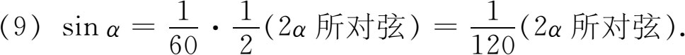
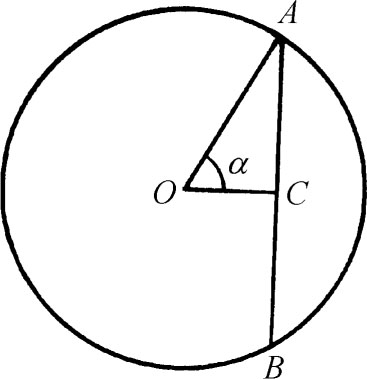
图5.11
希腊三角术在梅内劳斯（约98年）时到达顶点。他的主要著作是《球面学》（Sphaerica），但显然也写了含六篇的《圆上的弦》（Chords in a Circle）和关于黄道带弧的下沉（或升起）的著作。阿拉伯人还把别的一些著作归之于他。
现尚存阿拉伯译本的《球面学》，此书分为三篇。第一篇是研究球面三角的，其中有球面三角形的概念，即是球面上由小于半圆的三个大圆弧所构成的图形。书的目的是对球面三角形证明那些相当于欧几里得对平面三角形所证的定理。如，球面三角形两边之和大于第三边，球面三角形内角之和大于两直角，球面三角形的等边对等角。梅内劳斯然后证明平面三角形里所不能类比的一个定理：若两球面三角形的三个角彼此对应相等，则此两球面三角形全等。他还列出别的全等形定理和等腰三角形定理。
梅内劳斯的《球面学》的第二篇主要讲天文学，只是间接地涉及球面几何。第三篇含有一些球面三角的内容，并把它建立在该篇第一个定理的基础上。在那个定理里他假定有一个球面三角形ABC（图5.12），以及与三角形的边相交的任一大圆弧（必要时得延长）。为陈述这定理，我们用现代的正弦记号，但在梅内劳斯的书里，AB这样一个弧的正弦（或球心处相应圆心角的正弦）却用AB弧的双倍弦来替代。因此梅内劳斯的定理用我们的正弦来写就是
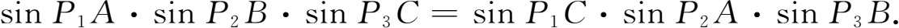
这定理的证明要依据平面三角形的相应定理（现仍叫梅内劳斯定理）。对于平面三角形，定理是（图5.13）
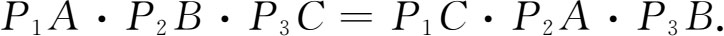
梅内劳斯没有证明关于平面三角形的这个定理。我们可以认为这证明他早已知道，或已在他先前的著作中证明过。
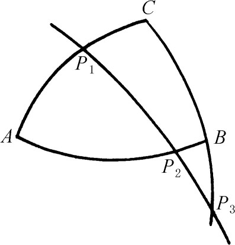 | 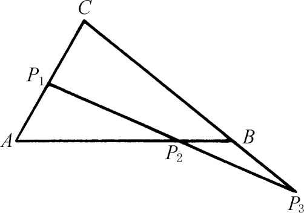 |
| 图5.12 | 图5.13 |
第三篇的第二个定理（若记三角形ABC的角A所对弧为a）可表述为：若ABC及A′B′C′为两球面三角形，且若A＝A′，C＝C′（或C与C′互补），则
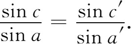
第三篇的定理5里利用了弧的一个性质，它被认为是梅内劳斯时代已经知道的。这性质是：若有四个大圆弧从一点O（图5.14）发出，而ABCD与A′B′C′D′是与四者相交的大圆弧，则有
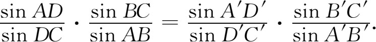
以后我们可以看到，在帕普斯著作中的非调和比（或交比）概念里以及在后人射影几何的著作里重新出现了相应于上式左边或右边的表达式。球面三角里还有其他许多定理是属于梅内劳斯的。
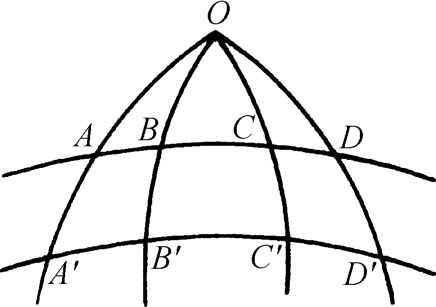
图5.14
希腊三角术的发展及其在天文上的应用在埃及人托勒玫（Claudius Ptolemy，死于168年）的著作里达到了顶点。托勒玫至少是属于这一姓的数学家族中的人，虽然他并非属于这一姓的王族。托勒玫生活在亚历山大，并在艺术宫里工作。
托勒玫在他的《数学汇编》［Syntaxis Mathematica或Mathematical Collection，这著作阿拉伯人称之为《大汇编》（Megale Syntaxis，Megiste，最后称为Almagest）］中继承了希帕恰斯和梅内劳斯在三角和天文方面的工作。《大汇编》的十三篇中天文和三角是混在一起的，虽然第一篇主要讲球面三角而其他各篇主要讲天文。关于这点我们将在第7章中加以讨论。
托勒玫的《大汇编》里全部是数学性质的内容，只是在驳斥阿利斯塔克（Aristarchus）所提出的太阳中心说时他应用了亚里士多德的物理学。他说，只有以虚心求知的态度获得的数学知识才能给人以可靠的知识，因此他要尽其力之所能来培育这门理论学科。托勒玫又说他想把他的天文学建立在“不容置辩的算术和几何方法”的基础之上。
托勒玫在第一篇第9章里一开头就计算圆弧的一些弦的长，从而充实了希帕恰斯和梅内劳斯的工作。如前所说，圆周是被分为360份或360个单位的（他没有用“度”这个字），直径是被分为120份的。然后他提出：给定一弧为360份中的若干份，求相应弦之长（用直径所含120份中的份数表示）。
他先计算36°弧和72°弧的对应弦。在图5.15中，ADC是以D为中心的圆的直径，BD垂直于ADC。E是DC的中点，并取F使EF＝BE。托勒玫用几何方法证明FD等于圆内接正十边形的一边，BF等于圆内接正五边形的一边。但ED含30份，BD含60份。由于
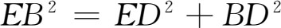
，，于是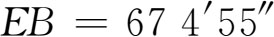
（这表示67＋4/60＋55/602份）。现因EF＝EB，于是他就得到EF。于是FD＝EF-DE＝67 4′55″-30＝37 4′55″。由于FD等于正十边形的一边，它是36°弧的对应弦。因此他得出这个弧的弦长。但从FD及直角三角形FDB可算出BF，得70 32′3″。但BF是正五边形的一边。所以它是72°弧的弦。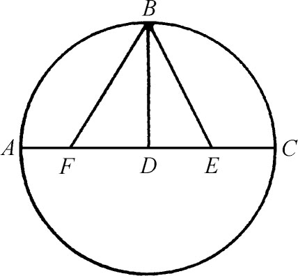
图5.15
由于正六边形的边长等于半径，所以他立即得出60°弧的弦长是60份。又因内接正方形的边可用半径算出，他就得到90°弧的弦长，它等于84 51′10″。其次，因内接正三角形的边也可从半径算出，故得120°弧的弦为103 55′23″。
利用直径AC上的直角三角形ABC（图5.16），则若知BC弧的弦，便能立即得出其相补弧AB的弦。例如，因托勒玫已知36°弧的弦，他便得144°弧的弦为114 7′37″。
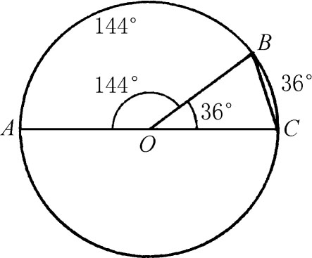
图5.16
当A为任一锐角时，上面得出的关系就相当于
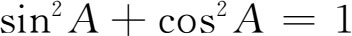
。这可从以下所讲的方式看出来。托勒玫证明若S是小于180°的任一弧，则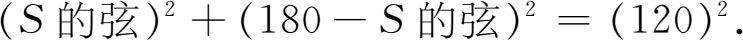
但根据（9）有
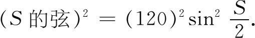
因此
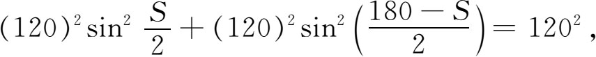
或即
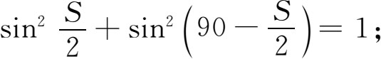
也就是
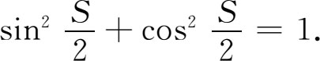
接着托勒玫证明一引理（现叫托勒玫定理）。给定圆的任一内接四边形（图5.17），他证明。证明是直截了当的。他取AD为一直径时的那种特殊四边形ABCD（图5.18）。设已知AB及AC，托勒玫然后指出怎样求BC。BD是AB弧补弧的弦，CD是AC弧补弧的弦。现在应用引理，则可看出六个长度中的五个为已知，故这里的第六个长度BC可以算出。但BC弧＝AC弧-AB弧。故若两弧的弦为已知，便可算出两弧之差的弦。用现代术语来表达，这就是说，若已知sinA及sinB，就可算出sin（A-B）。托勒玫指出，由于他已知72°弧的弦和60°弧的弦，所以他能算出12°弧的弦。
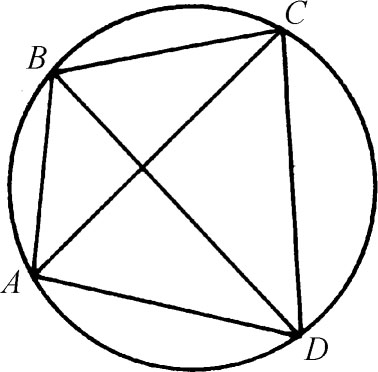 | 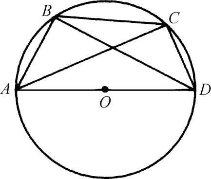 |
| 图5.17 | 图5.18 |
其次，指出怎样从圆的任一给定弦，求出相应半弧的所对弦。用现代术语，这就是从sinA求
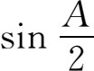
。托勒玫指出这结果是很有用的，因我们可从弦为已知的任一弧出发，不断取其半而求出其相应弦。他又指出若已知AB弧的弦和BC弧的弦，则可得AC弧的弦。用现代术语讲，这结果就是sin（A＋B）的公式。作为特例，他指出相当于现代术语所表达的从sinA求sin2A的结果。由于托勒玫能从12°的弦平分数次得出（3/4）°弦，故他能给任一已知弦所对的弧加上或减去（3/4）°弧；并且能用上述定理来算这样的两段弧之和或差所对应的弦。这样他就能算每两个相差（3/4）°的所有的弧。但他还想得出每步相差为（1/2）°的弧所对应的弦。这里他聪明地想起用不等式来作推理。他得出（1/2）°的弦的近似结果是0 31′25″。
于是他能把0°到180°间所有相差为（1/2）°的弧所对应的弦都算出并列成表。这是第一个三角函数表。
然后托勒玫着手（在第一篇第11章里）解决需要求出球面大圆上一些弧的天文问题。这些弧是球面三角形的边，其中有些边是通过观测或先前的计算已经得出的。为定出这些弧，托勒玫证明了球面三角定理中的一些关系式，其中有些是梅内劳斯在其《球面学》的第三篇里已经证明了的。于是他证明（用我们的记号）在C为直角的球面三角形里（图5.19），记a为角A的对边，有
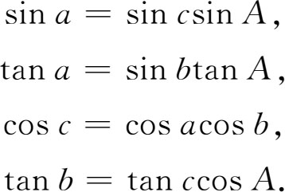
当然，我们这里的各种三角函数在托勒玫的书里都是弧的相应弦。计算斜球面三角形时，他把它分成有直角的球面三角形。书里没有系统讲解球面三角；他只是证明了为解特定天文问题所需用的那些定理。
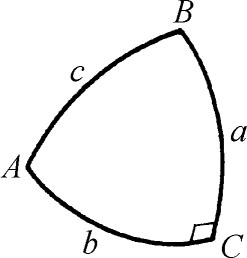
图5.19
《大汇编》里把三角术定了型，并于此后一千多年保持不变。我们常说他的三角术是球面三角，实际在评价托勒玫的材料时球面三角和平面三角之分是没有多大意义的。托勒玫研究的肯定是球面三角形，但他算出弧的弦时实际就奠定了平面三角的理论基础。因若已经知道从0°到90°的A所对应的sinA（实际上还有cosA），那就能够解平面三角形了。
应该指出，三角术是为天文学上的应用而产生的；又因球面三角对此更有用，所以球面三角是先研究出来的。平面三角用于间接测量和测绘工作，对于希腊数学是无缘的。这看来可能有些奇怪，但从历史上来看是不难理解的，因为天文是希腊数学所主要关心的事。测绘工作到了亚历山大时期诚然变得重要起来；像赫伦这样有志于搞测绘工作的数学家本来是能够发展平面三角的，但他觉得用欧几里得几何已经蛮可以了。至于那些未受教育的测绘人员则对于产生所需的三角术这项工作是无能为力的。